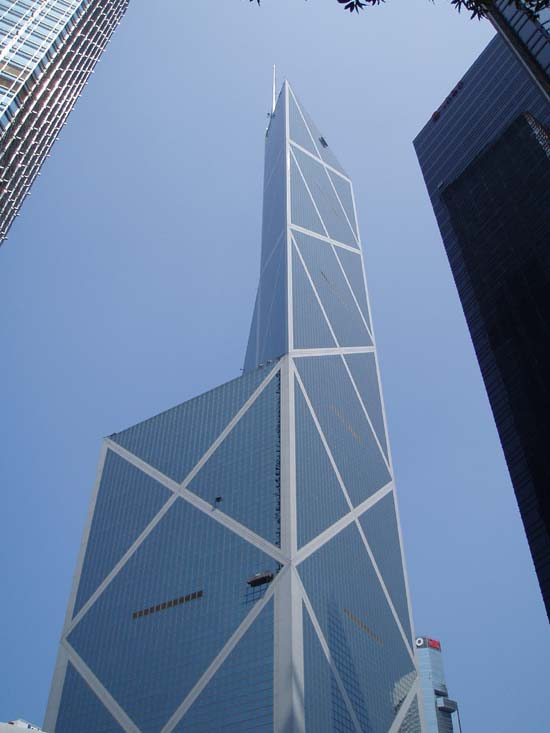

Culture
Hong Kong is frequently described as a place where "East meets West", reflecting the culture's mix of the territory's Chinese roots with influences from its time as a British colony. Hong Kong balances a modernised way of life with traditional Chinese practices. Concepts like feng shui are taken very seriously, with expensive construction projects often hiring expert consultants, and are often believed to make or break a business. Other objects like Ba gua mirrors are still regularly used to deflect evil spirits, and buildings often lack any floor number that has a 4 in it, due to its similarity to the word for "die" in Cantonese. The fusion of east and west also characterises Hong Kong's cuisine, where dim sum, hot pot, and fast food restaurants coexist with haute cuisine.
Hong Kong is a recognised global centre of trade, and calls itself an "entertainment hub". Its martial arts film genre gained a high level of popularity in the late 1960s and 1970s. Several Hollywood performers, notable actors and martial artists have originated from Hong Kong cinema, notably Bruce Lee, Jackie Chan, Chow Yun-fat, Michelle Yeoh, Maggie Cheung and Jet Li. A number of Hong Kong film-makers have achieved widespread fame in Hollywood, such as John Woo, Wong Kar-wai, and Stephen Chow. Homegrown films such as Chungking Express, Infernal Affairs, Shaolin Soccer, Rumble in the Bronx, In the Mood for Love and Echoes of the Rainbow have gained international recognition. Hong Kong is the centre for Cantopop music, which draws its influence from other forms of Chinese music and Western genres, and has a multinational fanbase.
{kind=link}
The Hong Kong government supports cultural institutions such as the Hong Kong Heritage Museum, the Hong Kong Museum of Art, the Hong Kong Academy for Performing Arts, and the Hong Kong Philharmonic Orchestra. The government's Leisure and Cultural Services Department subsidises and sponsors international performers brought to Hong Kong. Many international cultural activities are organised by the government, consulates, and privately.
Hong Kong has two licensed terrestrial broadcasters - ATV and TVB. There are three local and a number of foreign suppliers of cable and satellite services. The production of Hong Kong's soap dramas, comedy series, and variety shows reach audiences throughout the Chinese-speaking world. Magazine and newspaper publishers in Hong Kong distribute and print in both Chinese and English, with a focus on sensationalism and celebrity gossip. The media in Hong Kong is relatively free from official interference compared to mainland China, although the Far Eastern Economic Review points to signs of self-censorship by journals whose owners have close ties to or business interests in the People's Republic of China and states that even Western media outlets are not immune to growing Chinese economic power.


Hong Kong offers wide recreational and competitive sport opportunities despite its limited land area. It sends delegates to international competitions such as the Olympic Games and Asian Games, and played host to the equestrian events during the 2008 Summer Olympics. There are major multipurpose venues like Hong Kong Coliseum and MacPherson Stadium. Hong Kong's steep terrain and extensive trail network with expansive views attracts hikers, and its rugged coastline provides many beaches for swimming.
{kind=link}
Source:http://en.wikipedia.org/wiki/Culture_of_hong_kong